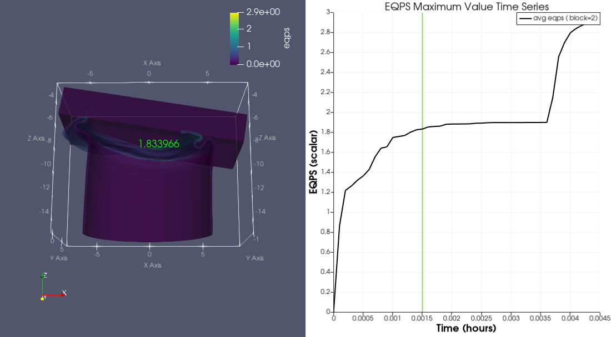

The rate of plastic deformation in ductile materials, such as metals, is characterized by a scalar value known as the
equivalent plastic strength (EQPS).
We can use interactive animations and data filters to visualize this concept. As such, let's take a model of a can being crushed by a block
and take it one step further by drilling down to the exact pixel in which EQPS is at a maximum.
